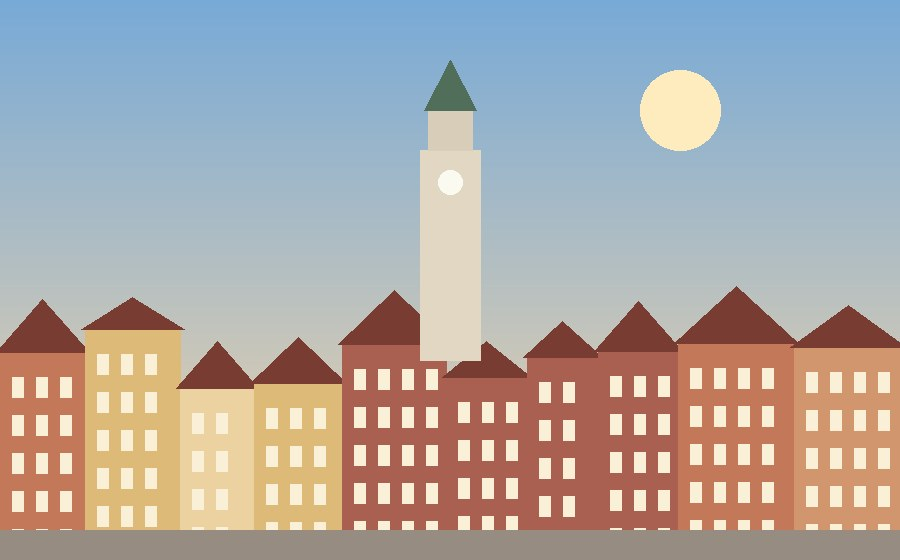

Львів

Коротко про місто
Львів — одне з найбільших міст заходу України і обласний центр. Місто засноване в середині XIII століття, перша згадка про нього в літописі датується 1256 роком. Історичний центр Львова внесений до списку Світової спадщини ЮНЕСКО.
Чому я його обрала
Я тут навчаюся, тому бачу Львів кожного дня і все одно не втомлююся від нього. Мені подобається, що навіть звичайна дорога на пари проходить повз будинки, яким кілька сотень років. А ще тут дуже багато маленьких кав'ярень, у кожної свій характер.
Цікаві факти
- Старе місто Львова занесене до списку ЮНЕСКО у 1998 році.
- Львівський оперний театр відкрили у 1900 році.
- Львів часто називають кавовою столицею України.
- Площа Ринок забудована кам'яницями, багато з яких мають власну назву та історію.
Що варто побачити
- Площа Ринок і Ратуша
- Львівський національний академічний театр опери та балету
- Високий Замок
- Личаківський цвинтар
- Вірменська вулиця
Моя оцінка
10 з 10. Найкраще місто для прогулянок пішки, особливо восени.
Більше інформації: Львів у Вікіпедії